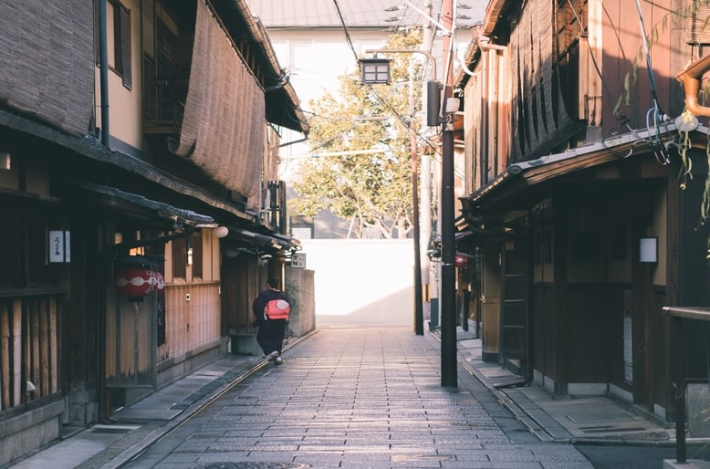

Kyoto (京都) fût l'ancienne capitale impériale du Japon.
Elle n'a rien à envier à Tokyo et dispose de nombreux endroits à visiter.
De nombreux temples, ainsi que l'ancien palais impériale s'y trouvent.
Le Japon des traditions
L'un des plus célèbres lieux à visiter est le kinkaku-ji, le fameux pavillon doré.
L'autre endroit le plus connu et qui fait aussi l'objet de voyages scolaires pour de nombreux écoliers japonais est le kiyomizudera (清水寺), un temple construit à flanc de colline. D'ailleurs, les écoliers en voyage scolaire tout comme les visiteurs peuvent s'adonner à un petit jeu où il doivent atteindre un rocher les yeux fermés et le toucher afin d'avoir de la chance en amour. Au contrebas, se trouve une chute d'eau que les visiteurs peuvent boire l'eau qui aurait des propriétés thérapeutiques.
Un autre site très connu est le inari-jinja (稲荷神社). Ce qui fait la particularité de ce temple est le chemin qui mène au temple est une rangée de torii (鳥居). Un torii est un grand portail rouge qui est généralement à l'entrée d'un temple.
 Machiya, les maisons japonaises d'un autre tempsUn autre charme de Kyoto est son quartier traditionnel, Gion (祇園). On y trouve les fameux machiya qui sont les maisons traditionnelles qui faisaient office d'ateliers. D'ailleurs, il y a toujours des ateliers familiales qui sont en activité depuis plus d'une centaine d'années et qui donc pérennisent les modes de fabrication traditionnelle d'antan. En se promenant, on peut aussi croiser par chance des maïko, des apprenties geisha. En effet, l'endroit est aussi réputé pour former des geisha.
Kyoto n'est pas seulement le lieu des traditions car on peut aussi y trouver le musée du manga. Ce lieu est riche en informations avec des évènements, des expositions et dispose d'un lieu de détente avec une bibliothèque où l'on peut lire d'ancien manga. Et pour celles et ceux qui sont fans de jeux vidéo, la fameuse compagnie Nintendo est basée à Kyoto!